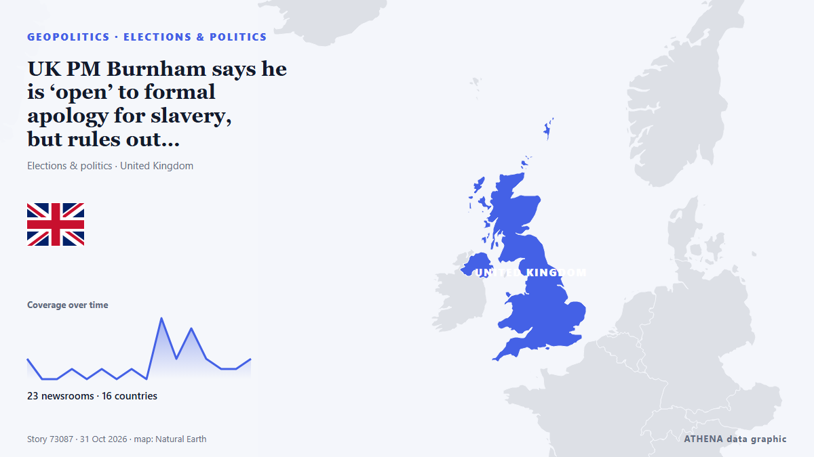

UK PM Burnham says he is ‘open’ to formal apology for slavery, but rules out reparations

At least 12.5 million Africans were abducted and sold into slavery. من Express Tribune
نشرته بشكل مستقل 25 مصدرًا في 18 دولة منذ 31 أكتوبر، وأول من نشره Evening Standard (London)؛ والتغطية لا تزال تتسع. يقدّر ATHENA الخطر بأنه معتدل (3.1/10)، ويعود ذلك أساسًا إلى خطورة الضرر الموصوف ونطاقه الجغرافي والقطاعي. الثقة 90٪ (مرتفعة)، وعدد المصادر المستقلة المؤكِّدة: 25، بمتوسط موثوقية للمصادر يبلغ 76٪. وسائل الإعلام حسب البلد: المملكة المتحدة (4), الولايات المتحدة (3), باكستان (3). التغطية: من 31 أكتوبر إلى 31 أكتوبر، 18 ساعة.
لماذا يهم: قد تغيّر التطورات الأمنية والدبلوماسية التحالفات والتجارة والأسواق إلى ما هو أبعد بكثير من الدول المعنية مباشرة.
ما الذي تغيّر: 26 تقارير جديدة من 24 غرف أخبار خلال 24 ساعة حتى 31 أكتوبر.
العنوان الأول: Mottley welcomes UK slavery apology talks despite reparations divide
تُعرض العناوين بالإنجليزية كما نُشرت.
نظرة سريعة
اختير وقُيِّم وكُتب وفق منهجية ATHENA المنشورة. لا يتدخل أي محرر في الأحداث بعينها. كيف يُنتَج ›
| 31 Oct 00:15 UTC | 2 |
|---|---|
| 31 Oct 01:15 UTC | 0 |
| 31 Oct 02:15 UTC | 0 |
| 31 Oct 03:15 UTC | 1 |
| 31 Oct 04:15 UTC | 0 |
| 31 Oct 05:15 UTC | 1 |
| 31 Oct 06:15 UTC | 0 |
| 31 Oct 07:15 UTC | 1 |
| 31 Oct 08:15 UTC | 0 |
| 31 Oct 09:15 UTC | 6 |
| 31 Oct 10:15 UTC | 2 |
| 31 Oct 11:15 UTC | 5 |
| 31 Oct 12:15 UTC | 2 |
| 31 Oct 13:15 UTC | 1 |
| 31 Oct 14:15 UTC | 1 |
| 31 Oct 15:15 UTC | 2 |
| 31 Oct 16:15 UTC | 0 |
| 31 Oct 17:15 UTC | 2 |
| 31 Oct 02:22 UTC | 0.0 |
|---|---|
| 31 Oct 12:27 UTC | 1.8 |
| 31 Oct 14:58 UTC | 2.9 |
| 31 Oct 17:52 UTC | 3.1 |
لماذا هذه الأرقام
الأهمية
الخطر
الثقة
التغطية — من نشر الخبر ومتى
العنوان كما نُشر · يفتح الأصل- Evening Standard (London) · المملكة المتحدةAndy Burnham ‘open’ to calls for British formal apology for slavery
- Barbados Today · بربادوسMottley welcomes UK slavery apology talks despite reparations divide
- The New York Times (World) · الولايات المتحدةBritain’s Prime Minister Says He’s Open to a Formal Apology for Slavery
- Express Tribune · باكستانUK PM Burnham says he is 'open' to formal apology for slavery, but rules out reparations
- Bristol Post · المملكة المتحدةAndy Burnham issues update on calls for 'formal apology' on slavery
- Anadolu Agency (English) · تركياUK prime minister open to slavery apology, rejects financial reparations
- NBC News (World) · الولايات المتحدةU.K. PM open to slave trade apology but rules out financial reparations
- eNCA · جنوب أفريقياUK PM 'open' to slavery apology but not reparations
- The Straits Times · سنغافورةUK PM Burnham says he is ‘open’ to formal apology for slavery, but rules out reparations
- Stuff · نيوزيلنداUK prime minister signals the government will consider an apology for its role in the slave trade
- ABC News (International) · الولايات المتحدةUK PM signals the government will consider an apology for its role in the slave trade
- Vanguard · نيجيرياUK PM ‘open’ to slavery apology but not reparations
- Dawn · باكستانUK PM 'open' to slavery apology but not reparations
- New Straits Times · ماليزياUK PM 'open' to slavery apology but not reparations
- IOL · جنوب أفريقياUK prime minister prepared to apologise for slavery but draws the line at reparations
- Bangkok Post — page reader · تايلاندBritish PM ‘open’ to slavery apology, rules out reparations
- Nation.Cymru · المملكة المتحدةAndy Burnham ‘open’ to calls for British formal apology for slavery
- France 24 English · فرنساUK PM Burnham says 'open' to slavery apology but rules out financial reparations
- Politico Europe · بلجيكاBurnham ‘open’ to formal apology for Britain’s slave trade
- Al Jazeera English · قطرBurnham opens door to formal apology for Britain’s slave trade
- Business Recorder · باكستانUK PM Burnham says he is 'open' to formal apology for slavery, but rules out reparations
- The Jerusalem Post · إسرائيلUK's Burnham says he is 'open' to formal apology for slavery, but rules out reparations
- Jamaica Observer · جامايكاUK PM ‘open’ to slavery apology but not reparations
- GBC Ghana Online · غاناUK Prime Minister Andy Burnham ‘open’ to calls for slavery apology but not reparations
- Nation.Cymru · المملكة المتحدةBadenoch says talk of formal UK slavery apology is ‘navel-gazing distraction’